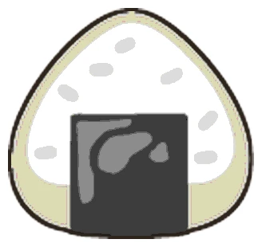

BON OHEYA
ボンの おへや
だれの おへやに いく？
ボンの おへやに あそびにいこう。なでなで、ほっぺを つんつん、だっこ、ぎゅっ、てを つなぐ…ボンによって はんのうが ちがうよ。
ノルマも ランキングも ないよ。すきなボンと、すきなだけ すごしてね。なでなでの きろくは「なかよし度」に つながるよ（この端末のブラウザの中だけに保存）。
なかよし そうかんず

しゅしょく
おかず
おやつ
くだもの
のみもの
えらんでる ボタンを もういちど おすと、パネルが ちいさく なるよ。
にっき
あそびかた（ボンの おへや）
- おへや：7人の おへやから ひとりを えらぶよ。なかよし度や きろくも この画面で 見られるよ。ボンは おへやで、歩いたり、休んだり、自分で すごしているよ。ながめているだけでも たのしい。
- ふれあい：下の パネルの「ふれあい」から。「あそび」は、にらめっこ・かくれんぼ・おいかけっこ・てあそび・いないいないばあ・くるくる まわる・いっしょに ダンス（じゃんけんや しりとりは「ボンたちと おしゃべり」で あそべるよ）。「こえかけ」は、なまえを よぶ・いっしょに うたう・いっしょに わらう・ほめる・はげます。「スキンシップ」は、なでなで・ほっぺ つんつん・おなか ぽんぽん・くすぐる・おてて ふりふり・あたま こつん・だっこ・ぎゅっ・てを にぎる。「あまえ・いやし」は、ひざに のせる・ひざで だっこ・そいね ごっこ・よしよし・せなか とんとん・みまもり なでなで・てを つないで。ボンごとに 反応が ちがうし、おなじ ふれあいでも 毎回 ちがう ことを 言うよ。ふれあいの あとに、ボンの ほうから 自分で 反応する ことも あるよ。
- ヒント：ひょえボンの おへやの「とけい」を、すばやく 3かい おしてみると…？ もういちど おすと…？
- こばなしの ヒント：おへやの 小物（とけい・はちうえ・ぬいぐるみ・ほん）を、ボンごとに すばやく 何回か おしてみると…？ ／ ひょえボンが ようすを かえた あとの ひとことに、耳を すませてみてね。／ 夜ふけ（0時〜4時ごろ）に のぞくと、ボンたちの ようすが ちがうかも。
- ひさしぶりの ごあいさつ：しばらく ぶりに あうと、ボンが ようすを ことばに するよ。ボンが おぼえていることも あるかも。じかんたいで すごしかたも ちがうよ。
- ごはん：「ごはん」を おして、あげたい ものを えらぶ。おなかゲージや ペナルティは ないから、気がるに どうぞ。
- ひとりじかん／いっしょに あそぶ：ボンが ひとりで すごしたり、いっしょに あそんだり。
- おやすみ：ねかせると、ボンが ねむるよ。もういちど おすと「おはよう」。
- こものを タップ：はちうえ・ほん・ぬいぐるみ・とけい(ひょえの おへやは ピアノも)を タップすると、ボンが 反応するよ。
- ほかの ボンを よぶ：ほかの ボンが あそびに くるよ。
- じかん：あさ・ひる・ゆうがた・よるで、おへやの ようすが かわるよ。
- きろく：この端末の ブラウザに ほぞん。「今日のボン」「ふれあい」と 同じ きろくだよ。
ボンの ほんのうに ついては かんたんガイド を 見てね。
ボンたちの 1日を 見る
ボンの 1日
深夜・明け方・早朝・朝・昼前・昼・午後・夕・夜・夜ふけの 10じかんで、7人ぜんいんの ようすが かわるよ。
ボンの バッジを 見る
ボンの かおを タップしても なでなでできるよ。ブラウザの「もどる」でも、おへや選びに もどれるよ。